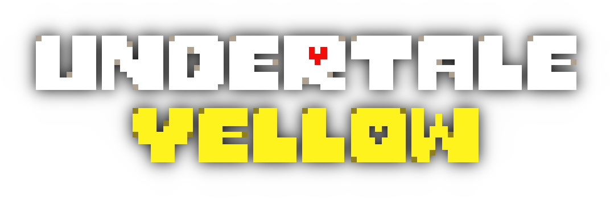

Comunidad
Fan games y mods
Muchos fans crean mods que cambian batallas, música o incluso añaden nuevos capítulos no oficiales. También existen fan games completos inspirados en el estilo de Deltarune, que expanden el universo con historias alternativas.
Undertale Yellow

Undertale Yellow: un fangame que sirve como precuela de Undertale, desarrollado por fans y muy elogiado por su fidelidad al estilo de Toby Fox y su historia original.
DeltaTraveler

DeltaTraveler es un proyecto comunitario que mezcla el mundo de Deltarune con una mecánica de exploración de estilo experimental.
Foros y redes
Los jugadores se reúnen en comunidades en línea para debatir teorías, compartir memes y descubrir secretos del juego. Los espacios más destacados incluyen:
- Reddit: r/Deltarune, dedicado a teorías y fanart.
- Wikis: proyectos comunitarios para documentar la historia, personajes y mecánicas.
Eventos y teorías populares
La comunidad disfruta elaborando teorías sobre la conexión entre Deltarune y Undertale, el papel de Kris y la misteriosa figura de Gaster. Además, se organizan eventos creativos como concursos de arte, maratones de speedrun y colaboraciones musicales.
Fanart y creaciones
El fanart ocupa un lugar central en la comunidad: ilustraciones, cómics y animaciones basadas en personajes. Plataformas como Twitter/X están repletas de contenido creado por fans. También hay remixes musicales y covers del soundtrack de Toby Fox, que se comparten en YouTube y Spotify.